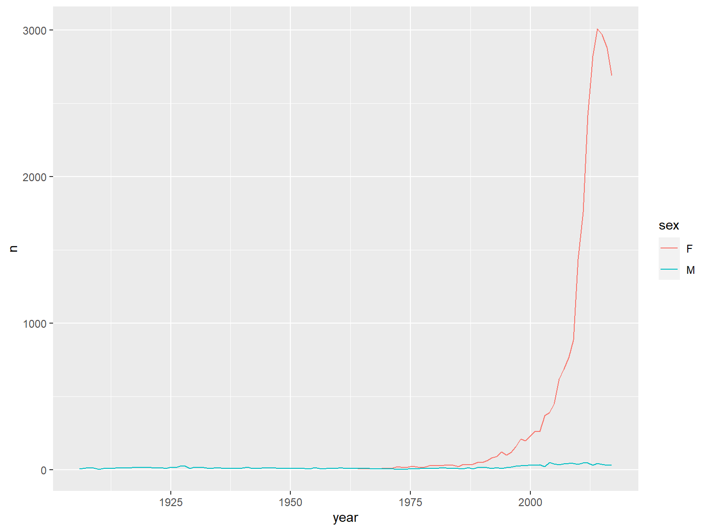

需要安裝babynames,ggplot2
title: Tidy basic 01
Tidy Basic 01
require(tidyr)
require(dplyr) # data_frame
From http://stackoverflow.com/questions/1181060
require(tidyr)
#> 載入需要的套件：tidyr
require(dplyr) # data_frame
#> 載入需要的套件：dplyr
#>
#> 載入套件：'dplyr'
#> 下列物件被遮斷自 'package:stats':
#>
#> filter, lag
#> 下列物件被遮斷自 'package:base':
#>
#> intersect, setdiff, setequal, union
stocks <- data_frame(
time = as.Date('2009-01-01') + 0:9,
X = rnorm(10, 0, 1),
Y = rnorm(10, 0, 2),
Z = rnorm(10, 0, 4)
)
#> Warning: `data_frame()` was deprecated in tibble 1.1.0.
#> Please use `tibble()` instead.
dset1 <- head(stocks)
knitr::kable(dset1, format = "html")
| time | X | Y | Z |
|---|---|---|---|
| 2009-01-01 | 1.5516570 | -1.057305 | -0.9062304 |
| 2009-01-02 | -0.3658073 | 1.278667 | -4.5910050 |
| 2009-01-03 | -0.7272649 | 4.045900 | 7.1110281 |
| 2009-01-04 | 1.0913697 | 1.297943 | 9.5256600 |
| 2009-01-05 | 0.5851491 | -1.756840 | 7.3349250 |
| 2009-01-06 | -1.4582033 | 0.132446 | 3.3220130 |
gather(stocks, stock, price, -time)
#> # A tibble: 30 x 3
#> time stock price
#> <date> <chr> <dbl>
#> 1 2009-01-01 X 1.55
#> 2 2009-01-02 X -0.366
#> 3 2009-01-03 X -0.727
#> 4 2009-01-04 X 1.09
#> 5 2009-01-05 X 0.585
#> 6 2009-01-06 X -1.46
#> 7 2009-01-07 X -0.551
#> 8 2009-01-08 X 0.333
#> 9 2009-01-09 X 0.980
#> 10 2009-01-10 X -0.523
#> # ... with 20 more rows
stocks %>% gather(stock, price, -time)
#> # A tibble: 30 x 3
#> time stock price
#> <date> <chr> <dbl>
#> 1 2009-01-01 X 1.55
#> 2 2009-01-02 X -0.366
#> 3 2009-01-03 X -0.727
#> 4 2009-01-04 X 1.09
#> 5 2009-01-05 X 0.585
#> 6 2009-01-06 X -1.46
#> 7 2009-01-07 X -0.551
#> 8 2009-01-08 X 0.333
#> 9 2009-01-09 X 0.980
#> 10 2009-01-10 X -0.523
#> # ... with 20 more rows
dset1 <- head(stocks)
knitr::kable(dset1, format = "html")
| time | X | Y | Z |
|---|---|---|---|
| 2009-01-01 | 1.5516570 | -1.057305 | -0.9062304 |
| 2009-01-02 | -0.3658073 | 1.278667 | -4.5910050 |
| 2009-01-03 | -0.7272649 | 4.045900 | 7.1110281 |
| 2009-01-04 | 1.0913697 | 1.297943 | 9.5256600 |
| 2009-01-05 | 0.5851491 | -1.756840 | 7.3349250 |
| 2009-01-06 | -1.4582033 | 0.132446 | 3.3220130 |
設定css
writeLines("td, th { padding : 6px } th { background-color : brown ; color : white; border : 1px solid white; } td { color : brown ; border : 1px solid brown }", con = "tableStyle.css")
stocks <- data_frame(
time = as.Date('2009-01-01') + 0:9,
X = rnorm(10, 0, 1),
Y = rnorm(10, 0, 2),
Z = rnorm(10, 0, 4)
)
dset1 <- head(stocks)
knitr::kable(dset1, format = "html")
| time | X | Y | Z |
|---|---|---|---|
| 2009-01-01 | -0.4432398 | 3.6429839 | 8.9376297 |
| 2009-01-02 | -1.2284601 | 0.9313461 | 1.7838838 |
| 2009-01-03 | -1.8414540 | -1.4044010 | 4.9042674 |
| 2009-01-04 | 1.6615898 | -2.8345610 | 3.8159852 |
| 2009-01-05 | 1.2735337 | 1.0441848 | -2.5711460 |
| 2009-01-06 | -1.0495124 | -2.4416584 | 0.4092309 |
demo<-gather(stocks, stock, price, -time)
dset1 <- head(demo)
knitr::kable(dset1, format = "html")
| time | stock | price |
|---|---|---|
| 2009-01-01 | X | -0.4432398 |
| 2009-01-02 | X | -1.2284601 |
| 2009-01-03 | X | -1.8414540 |
| 2009-01-04 | X | 1.6615898 |
| 2009-01-05 | X | 1.2735337 |
| 2009-01-06 | X | -1.0495124 |
wide <- data_frame(
time = as.Date('2009-01-01') + 0:9,
X = rnorm(10, 0, 1),
Y = rnorm(10, 0, 2),
Z = rnorm(10, 0, 4)
)
long <- gather(wide,stock,price,-time)
head(long)
#> # A tibble: 6 x 3
#> time stock price
#> <date> <chr> <dbl>
#> 1 2009-01-01 X 0.201
#> 2 2009-01-02 X -0.898
#> 3 2009-01-03 X -0.306
#> 4 2009-01-04 X 0.738
#> 5 2009-01-05 X 0.378
#> 6 2009-01-06 X 1.14
spread :long to wide
wide2 <-spread(long,stock,price)
head(wide2)
#> # A tibble: 6 x 4
#> time X Y Z
#> <date> <dbl> <dbl> <dbl>
#> 1 2009-01-01 0.201 0.185 -0.871
#> 2 2009-01-02 -0.898 0.941 -0.862
#> 3 2009-01-03 -0.306 0.750 -1.80
#> 4 2009-01-04 0.738 1.17 -1.38
#> 5 2009-01-05 0.378 -1.85 3.55
#> 6 2009-01-06 1.14 -2.68 4.11
更多參考: cookbook for R
dplyr
函數名 功能
-
row_number 排序,如果數值一樣,則靠前出現的元素排名在前,例如(3,3) 則 1,2
-
min_rank 排序,如果數值一樣,則都是同一等級，但是，佔用下一名次。例如
data<-c(3,3,4)
data
#> [1] 3 3 4
min_rank(data)
#> [1] 1 1 3
- dense_rank 排序,如果數值一樣,則都是同一等級，但是，
不佔用下一名次
data<-c(3,3,4)
data
#> [1] 3 3 4
dense_rank(data)
#> [1] 1 1 2
-
percent_rank 按百分比的排名
percent_rank = (min_rank(x) - 1)/(sum(!is.na(x)) - 1) -
cume_dist 累計分佈
-
ntile : floor(n * (row_number(x) - 1)/len + 1)
data<-round(runif(10)*10)
pr<-percent_rank(data)
cd<-cume_dist(data)
mr<-min_rank(data)
df<-data.frame(data,pr,mr,cd)
arrange(df,data)
#> data pr mr cd
#> 1 1 0.0000000 1 0.1
#> 2 3 0.1111111 2 0.5
#> 3 3 0.1111111 2 0.5
#> 4 3 0.1111111 2 0.5
#> 5 3 0.1111111 2 0.5
#> 6 5 0.5555556 6 0.7
#> 7 5 0.5555556 6 0.7
#> 8 6 0.7777778 8 0.8
#> 9 9 0.8888889 9 0.9
#> 10 10 1.0000000 10 1.0
note:
(2,3,3,3,3,4,5,6,6,9)
| 1 | 2 | 3 | 4 | 5 | 6 | 7 | 8 | 9 |
|---|---|---|---|---|---|---|---|---|
| 0 | 1 | 4 | 1 | 1 | 2 | 0 | 0 | 1 |
::: sidebar
arrange(dataframe, col1, col2, col3)
vs.
dataframe[order(dataframe$col1, dataframe$col2, dataframe$col3), ]
vs.
with(dataframe, dataframe[order(col1, col2, col3), ])
:::
::: sidebar 想要由大到小,例如分數等級
data
#> [1] 3 3 5 10 6 9 5 3 3 1
row_number(desc(data))
#> [1] 6 7 4 1 3 2 5 8 9 10
:::
::: sidebar Percentile The nth percentile of an observation variable is the value that cuts off the first n percent of the data values when it is sorted in ascending order.
Problem Find the 32nd, 57th and 98th percentiles of runiform(200).
data<-runif(200)
quantile(data, c(.32, .57, .98))
:::
other
library(babynames)
babynames
#> # A tibble: 1,924,665 x 5
#> year sex name n prop
#> <dbl> <chr> <chr> <int> <dbl>
#> 1 1880 F Mary 7065 0.0724
#> 2 1880 F Anna 2604 0.0267
#> 3 1880 F Emma 2003 0.0205
#> 4 1880 F Elizabeth 1939 0.0199
#> 5 1880 F Minnie 1746 0.0179
#> 6 1880 F Margaret 1578 0.0162
#> 7 1880 F Ida 1472 0.0151
#> 8 1880 F Alice 1414 0.0145
#> 9 1880 F Bertha 1320 0.0135
#> 10 1880 F Sarah 1288 0.0132
#> # ... with 1,924,655 more rows
Basic verbs
babynames %>% select(-prop)
#> # A tibble: 1,924,665 x 4
#> year sex name n
#> <dbl> <chr> <chr> <int>
#> 1 1880 F Mary 7065
#> 2 1880 F Anna 2604
#> 3 1880 F Emma 2003
#> 4 1880 F Elizabeth 1939
#> 5 1880 F Minnie 1746
#> 6 1880 F Margaret 1578
#> 7 1880 F Ida 1472
#> 8 1880 F Alice 1414
#> 9 1880 F Bertha 1320
#> 10 1880 F Sarah 1288
#> # ... with 1,924,655 more rows
babynames %>% select(year:n)
#> # A tibble: 1,924,665 x 4
#> year sex name n
#> <dbl> <chr> <chr> <int>
#> 1 1880 F Mary 7065
#> 2 1880 F Anna 2604
#> 3 1880 F Emma 2003
#> 4 1880 F Elizabeth 1939
#> 5 1880 F Minnie 1746
#> 6 1880 F Margaret 1578
#> 7 1880 F Ida 1472
#> 8 1880 F Alice 1414
#> 9 1880 F Bertha 1320
#> 10 1880 F Sarah 1288
#> # ... with 1,924,655 more rows
# starts_with(), ends_with(), contains()
babynames %>% filter(name == "Hadley")
#> # A tibble: 163 x 5
#> year sex name n prop
#> <dbl> <chr> <chr> <int> <dbl>
#> 1 1906 M Hadley 6 0.0000416
#> 2 1908 M Hadley 16 0.0000962
#> 3 1909 M Hadley 14 0.0000792
#> 4 1910 M Hadley 5 0.0000240
#> 5 1911 M Hadley 9 0.0000373
#> 6 1912 M Hadley 11 0.0000244
#> 7 1913 M Hadley 10 0.0000186
#> 8 1914 M Hadley 15 0.0000220
#> 9 1915 M Hadley 14 0.0000159
#> 10 1916 M Hadley 14 0.0000152
#> # ... with 153 more rows
babynames %>% filter(year == 1900, sex == "F")
#> # A tibble: 2,224 x 5
#> year sex name n prop
#> <dbl> <chr> <chr> <int> <dbl>
#> 1 1900 F Mary 16706 0.0526
#> 2 1900 F Helen 6343 0.0200
#> 3 1900 F Anna 6114 0.0192
#> 4 1900 F Margaret 5304 0.0167
#> 5 1900 F Ruth 4765 0.0150
#> 6 1900 F Elizabeth 4096 0.0129
#> 7 1900 F Florence 3920 0.0123
#> 8 1900 F Ethel 3896 0.0123
#> 9 1900 F Marie 3856 0.0121
#> 10 1900 F Lillian 3414 0.0107
#> # ... with 2,214 more rows
babynames %>% filter(year == 2013, sex == "F")
#> # A tibble: 19,231 x 5
#> year sex name n prop
#> <dbl> <chr> <chr> <int> <dbl>
#> 1 2013 F Sophia 21213 0.0110
#> 2 2013 F Emma 20936 0.0109
#> 3 2013 F Olivia 18414 0.00957
#> 4 2013 F Isabella 17631 0.00916
#> 5 2013 F Ava 15249 0.00793
#> 6 2013 F Mia 13147 0.00683
#> 7 2013 F Emily 13124 0.00682
#> 8 2013 F Abigail 12405 0.00645
#> 9 2013 F Madison 10591 0.00551
#> 10 2013 F Elizabeth 9448 0.00491
#> # ... with 19,221 more rows
babynames %>%
mutate(
first = tolower(substr(name, 1, 1)),
last = substr(name, nchar(name), nchar(name))
)
#> # A tibble: 1,924,665 x 7
#> year sex name n prop first last
#> <dbl> <chr> <chr> <int> <dbl> <chr> <chr>
#> 1 1880 F Mary 7065 0.0724 m y
#> 2 1880 F Anna 2604 0.0267 a a
#> 3 1880 F Emma 2003 0.0205 e a
#> 4 1880 F Elizabeth 1939 0.0199 e h
#> 5 1880 F Minnie 1746 0.0179 m e
#> 6 1880 F Margaret 1578 0.0162 m t
#> 7 1880 F Ida 1472 0.0151 i a
#> 8 1880 F Alice 1414 0.0145 a e
#> 9 1880 F Bertha 1320 0.0135 b a
#> 10 1880 F Sarah 1288 0.0132 s h
#> # ... with 1,924,655 more rows
babynames %>%
arrange(desc(prop))
#> # A tibble: 1,924,665 x 5
#> year sex name n prop
#> <dbl> <chr> <chr> <int> <dbl>
#> 1 1880 M John 9655 0.0815
#> 2 1881 M John 8769 0.0810
#> 3 1880 M William 9532 0.0805
#> 4 1883 M John 8894 0.0791
#> 5 1881 M William 8524 0.0787
#> 6 1882 M John 9557 0.0783
#> 7 1884 M John 9388 0.0765
#> 8 1882 M William 9298 0.0762
#> 9 1886 M John 9026 0.0758
#> 10 1885 M John 8756 0.0755
#> # ... with 1,924,655 more rows
babynames %>%
summarise(n = sum(n))
#> # A tibble: 1 x 1
#> n
#> <int>
#> 1 348120517
Group by
分組指令不會影響到原來的資料
head(mtcars)
#> mpg cyl disp hp drat wt qsec vs am gear carb
#> Mazda RX4 21.0 6 160 110 3.90 2.620 16.46 0 1 4 4
#> Mazda RX4 Wag 21.0 6 160 110 3.90 2.875 17.02 0 1 4 4
#> Datsun 710 22.8 4 108 93 3.85 2.320 18.61 1 1 4 1
#> Hornet 4 Drive 21.4 6 258 110 3.08 3.215 19.44 1 0 3 1
#> Hornet Sportabout 18.7 8 360 175 3.15 3.440 17.02 0 0 3 2
#> Valiant 18.1 6 225 105 2.76 3.460 20.22 1 0 3 1
str(mtcars)
#> 'data.frame': 32 obs. of 11 variables:
#> $ mpg : num 21 21 22.8 21.4 18.7 18.1 14.3 24.4 22.8 19.2 ...
#> $ cyl : num 6 6 4 6 8 6 8 4 4 6 ...
#> $ disp: num 160 160 108 258 360 ...
#> $ hp : num 110 110 93 110 175 105 245 62 95 123 ...
#> $ drat: num 3.9 3.9 3.85 3.08 3.15 2.76 3.21 3.69 3.92 3.92 ...
#> $ wt : num 2.62 2.88 2.32 3.21 3.44 ...
#> $ qsec: num 16.5 17 18.6 19.4 17 ...
#> $ vs : num 0 0 1 1 0 1 0 1 1 1 ...
#> $ am : num 1 1 1 0 0 0 0 0 0 0 ...
#> $ gear: num 4 4 4 3 3 3 3 4 4 4 ...
#> $ carb: num 4 4 1 1 2 1 4 2 2 4 ...
by_cyl <- mtcars %>% group_by(cyl)
head(by_cyl)
#> # A tibble: 6 x 11
#> # Groups: cyl [3]
#> mpg cyl disp hp drat wt qsec vs am gear carb
#> <dbl> <dbl> <dbl> <dbl> <dbl> <dbl> <dbl> <dbl> <dbl> <dbl> <dbl>
#> 1 21 6 160 110 3.9 2.62 16.5 0 1 4 4
#> 2 21 6 160 110 3.9 2.88 17.0 0 1 4 4
#> 3 22.8 4 108 93 3.85 2.32 18.6 1 1 4 1
#> 4 21.4 6 258 110 3.08 3.22 19.4 1 0 3 1
#> 5 18.7 8 360 175 3.15 3.44 17.0 0 0 3 2
#> 6 18.1 6 225 105 2.76 3.46 20.2 1 0 3 1
str(by_cyl)
#> grouped_df [32 x 11] (S3: grouped_df/tbl_df/tbl/data.frame)
#> $ mpg : num [1:32] 21 21 22.8 21.4 18.7 18.1 14.3 24.4 22.8 19.2 ...
#> $ cyl : num [1:32] 6 6 4 6 8 6 8 4 4 6 ...
#> $ disp: num [1:32] 160 160 108 258 360 ...
#> $ hp : num [1:32] 110 110 93 110 175 105 245 62 95 123 ...
#> $ drat: num [1:32] 3.9 3.9 3.85 3.08 3.15 2.76 3.21 3.69 3.92 3.92 ...
#> $ wt : num [1:32] 2.62 2.88 2.32 3.21 3.44 ...
#> $ qsec: num [1:32] 16.5 17 18.6 19.4 17 ...
#> $ vs : num [1:32] 0 0 1 1 0 1 0 1 1 1 ...
#> $ am : num [1:32] 1 1 1 0 0 0 0 0 0 0 ...
#> $ gear: num [1:32] 4 4 4 3 3 3 3 4 4 4 ...
#> $ carb: num [1:32] 4 4 1 1 2 1 4 2 2 4 ...
#> - attr(*, "groups")= tibble [3 x 2] (S3: tbl_df/tbl/data.frame)
#> ..$ cyl : num [1:3] 4 6 8
#> ..$ .rows: list<int> [1:3]
#> .. ..$ : int [1:11] 3 8 9 18 19 20 21 26 27 28 ...
#> .. ..$ : int [1:7] 1 2 4 6 10 11 30
#> .. ..$ : int [1:14] 5 7 12 13 14 15 16 17 22 23 ...
#> .. ..@ ptype: int(0)
#> ..- attr(*, ".drop")= logi TRUE
但是分組結果會影響其他dplyr指令的計算結果:
by_cyl %>% summarise(
disp = mean(disp),
hp = mean(hp)
)
#> # A tibble: 3 x 3
#> cyl disp hp
#> <dbl> <dbl> <dbl>
#> 1 4 105. 82.6
#> 2 6 183. 122.
#> 3 8 353. 209.
by_cyl %>% filter(disp == max(disp))
#> # A tibble: 3 x 11
#> # Groups: cyl [3]
#> mpg cyl disp hp drat wt qsec vs am gear carb
#> <dbl> <dbl> <dbl> <dbl> <dbl> <dbl> <dbl> <dbl> <dbl> <dbl> <dbl>
#> 1 21.4 6 258 110 3.08 3.22 19.4 1 0 3 1
#> 2 24.4 4 147. 62 3.69 3.19 20 1 0 4 2
#> 3 10.4 8 472 205 2.93 5.25 18.0 0 0 3 4
summarize()
What other summary functions can we use inside the summarize() verb? Any function in R that takes a vector of values and returns just one. Here are just a few:
mean(): the mean AKA the average
sd(): the standard deviation, which is a measure of spread
min() and max(): the minimum and maximum values respectively
IQR(): Interquartile range
sum(): the sum
n(): a count of the number of rows/observations in each group. This particular summary function will make more sense when group_by() is covered in Section 5.5.
實驗 pipeline vs no pipeline
產生資料
year=c(1990, 1991, 1990, 1991, 1990, 1991, 1990, 1991, 1990, 1991)
sex=c("f", "f", "f", "f", "f", "m", "m", "m", "m", "m")
#value=c(1, 2, 3, 4, 5, 1, 2, 3, 4, 5)
value=c(1, 2, 3, 4, 5, 6, 7, 8, 9, 10)
df<-data.frame(sex,year,value)
head(df)
#> sex year value
#> 1 f 1990 1
#> 2 f 1991 2
#> 3 f 1990 3
#> 4 f 1991 4
#> 5 f 1990 5
#> 6 m 1991 6
不用 pipeline
df<-group_by(df,sex)
ndf<-mutate(df,rank=min_rank(value))
arrange(ndf,sex)
#> # A tibble: 10 x 4
#> # Groups: sex [2]
#> sex year value rank
#> <chr> <dbl> <dbl> <int>
#> 1 f 1990 1 1
#> 2 f 1991 2 2
#> 3 f 1990 3 3
#> 4 f 1991 4 4
#> 5 f 1990 5 5
#> 6 m 1991 6 1
#> 7 m 1990 7 2
#> 8 m 1991 8 3
#> 9 m 1990 9 4
#> 10 m 1991 10 5
使用 pipeline
ndf<-df %>%
group_by(sex) %>%
mutate(rank = min_rank(value))
arrange(ndf,sex)
#> # A tibble: 10 x 4
#> # Groups: sex [2]
#> sex year value rank
#> <chr> <dbl> <dbl> <int>
#> 1 f 1990 1 1
#> 2 f 1991 2 2
#> 3 f 1990 3 3
#> 4 f 1991 4 4
#> 5 f 1990 5 5
#> 6 m 1991 6 1
#> 7 m 1990 7 2
#> 8 m 1991 8 3
#> 9 m 1990 9 4
#> 10 m 1991 10 5
問題:
- 如何知道min-rank(value)中的value 是全局或是欄位? hint: rm(value)
- 會出現甚麼結果
df %>% group_by(sex) %>%str()
nb <-babynames %>%
group_by(name)
babynames %>%
group_by(name) %>%
summarise(n = sum(n))
#> # A tibble: 97,310 x 2
#> name n
#> <chr> <int>
#> 1 Aaban 107
#> 2 Aabha 35
#> 3 Aabid 10
#> 4 Aabir 5
#> 5 Aabriella 32
#> 6 Aada 5
#> 7 Aadam 254
#> 8 Aadan 130
#> 9 Aadarsh 199
#> 10 Aaden 4658
#> # ... with 97,300 more rows
babynames %>%
filter(name %in% c("John", "Mary", "William")) %>%
group_by(name, sex) %>%
summarise(n = sum(n))
#> `summarise()` has grouped output by 'name'. You can override using the `.groups` argument.
#> # A tibble: 6 x 3
#> # Groups: name [3]
#> name sex n
#> <chr> <chr> <int>
#> 1 John F 21676
#> 2 John M 5115466
#> 3 Mary F 4123200
#> 4 Mary M 15160
#> 5 William F 15949
#> 6 William M 4102604
babynames %>%
group_by(year, sex) %>%
mutate(rank = min_rank(desc(n))) %>%
tail()
#> # A tibble: 6 x 6
#> # Groups: year, sex [1]
#> year sex name n prop rank
#> <dbl> <chr> <chr> <int> <dbl> <int>
#> 1 2017 M Zyhier 5 0.00000255 12171
#> 2 2017 M Zykai 5 0.00000255 12171
#> 3 2017 M Zykeem 5 0.00000255 12171
#> 4 2017 M Zylin 5 0.00000255 12171
#> 5 2017 M Zylis 5 0.00000255 12171
#> 6 2017 M Zyrie 5 0.00000255 12171
Combining to answer more complex questions
How many Hadley's?
babynames %>%
filter(name == "Hadley") %>%
group_by(sex) %>%
summarise(n = sum(n))
#> # A tibble: 2 x 2
#> sex n
#> <chr> <int>
#> 1 F 26708
#> 2 M 1883
The travesty
library(ggplot2)
babynames %>%
filter(name == "Hadley") %>%
ggplot(aes(year, n)) +
geom_line(aes(colour = sex))
